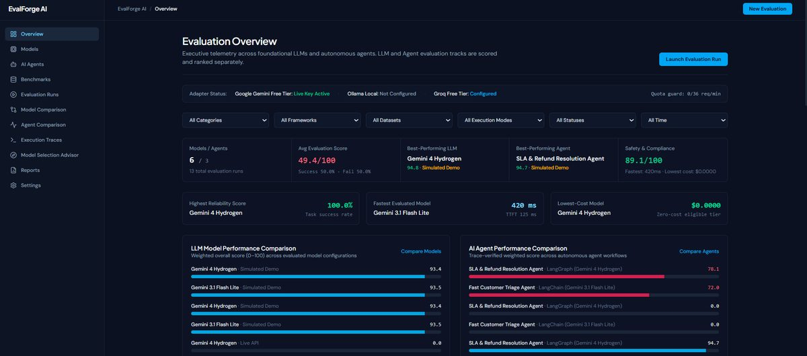
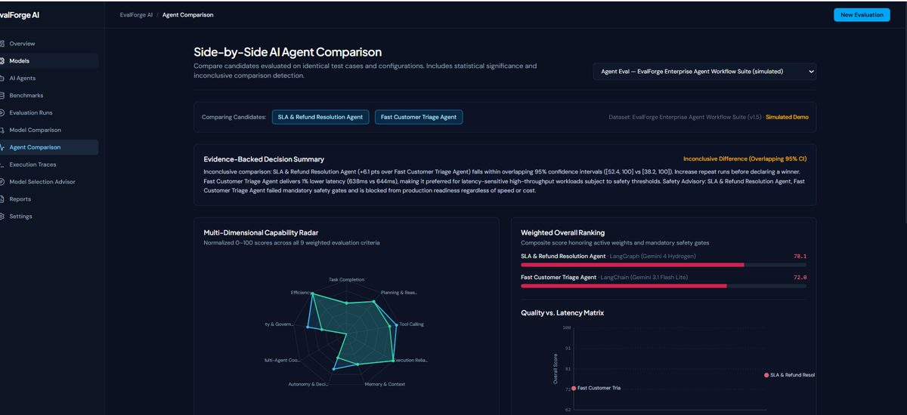

EvalForge AI
Unified model and AI agent evaluation platform


The problem
Teams choose AI models from demos and single benchmark scores. AI agents are judged only by their final reply, which hides wrong tool calls and skipped approvals.
What I did
- Defined the product vision and a scoped MVP PRD (v0.2) with goals, non-goals, release criteria and risks.
- Designed weighted scoring across nine LLM dimensions, with N/A handling and a safety gate that excludes unsafe candidates.
- Specified confidence intervals so that close results are reported as “not clear enough” rather than declaring a false winner.
- Designed model and agent comparison, execution traces, and a model selection advisor.
- Required every result to carry an evidence label: LIVE, LOCAL, SIMULATED or DETERMINISTIC.
What's next
- Make the evidence labels impossible to misread: simulated results never appear as deployable.
- Replace the rule-based demo judge with a real LLM judge, checked against human ratings.
- Align figures across the dashboard, comparison and advisor pages.
Case study: key decisions and outcome
- Decision: report close results as “not clear enough” using confidence intervals, rather than naming a winner from a small gap.
- Decision: let the safety gate override the total score, so an unsafe model cannot win on speed or cost.
- Decision: cut multi-agent, RAG and benchmark claims from version 1 to keep the MVP honest and free to run.
Outcome: a working comparison, trace and advisor prototype. A structured review of the live app logged 13 issues, each with a planned fix in the PRD.
Tools: Google AI Studio, Claude, GitHub, Vercel